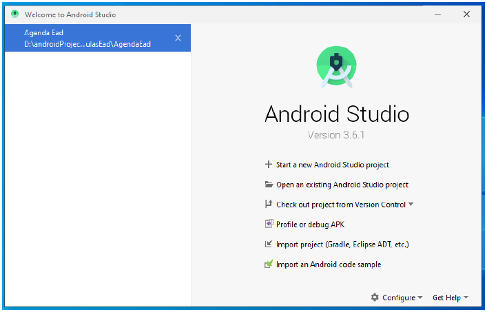
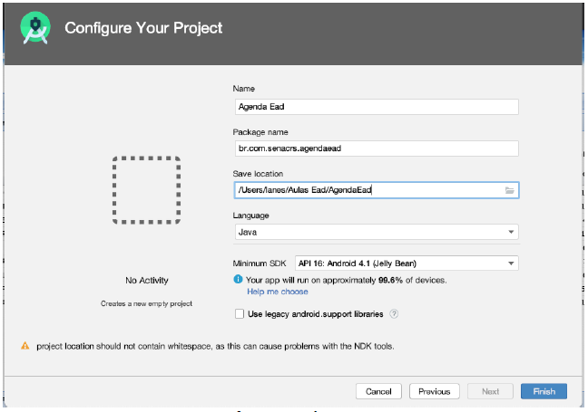
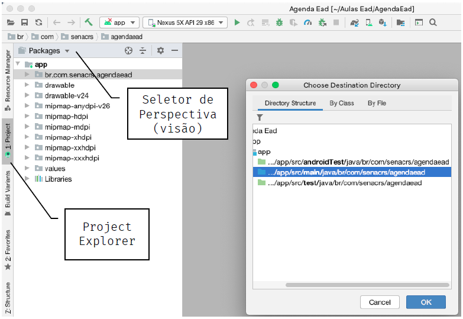
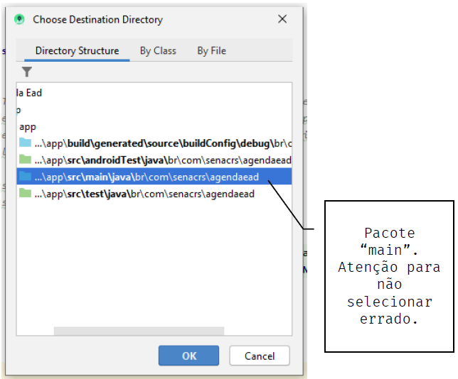
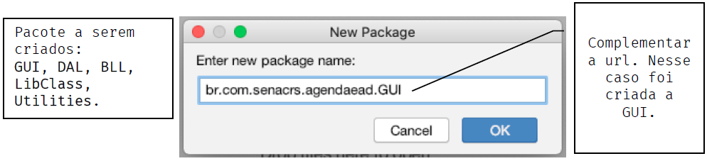
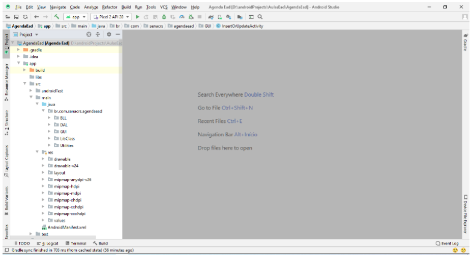

Na tela de boas vindas selecionar a opção Start a new Android Studio Project (figura 1)

Será exibida a janela Select a Project Template. Nessa janela selecionar a opção No Activity e clicar em next (figura 2). Precisamos selecionar o projeto sem activity pra podermos criar nossas camadas no capítulo 2
Após o clique em next, a janela Configure Your Project será exibida. Preencha todos os campos e seleções conforme a figura 3.

Nessa etapa, o projeto está criado no Android Studio. Agora precisamos colocar o nosso Project Explorer em perspectiva de Packages, uma vez que o padrão é perspectiva android (figura 4). Em seguida, clique com o botão direito do mouse sobre o pacote principal do nosso app, que é br.com.senacrs.agendaead, posicione o mouse sobre new e clique em package

Na janela Chosse Destination Directory (figura 5), selecione o pacote main e clique em OK

Na janela New Package, complemente a url com o novo pacote a ser criado e clique em OK (figura 6), vistos no material Android com Banco de Dados - Parte I. Como são 5 novos pacotes o processo deverá ser repetido para cada um.

Agora vamos mudar a perspectiva do Project Explorer de Package para Project e também expandir a estutura de diretórios do projeto (figura7) para começar a criar e editar nossas Classes, que estão no material Android com Banco de Dados - Parte III
